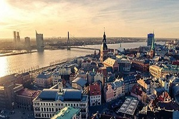

Страны
Список стран, в которых побывали авторы блога Дневник путешественника.
Во многих странах мы были неоднократно, а в некоторых и жили от месяца до года. Помимо России, мы жили в Болгарии, Турции, Таиланде и Малайзии (остров Лангкави).
-
Марокко

Марокко / Агадир, Айт-Бен-Хадду, Атлас, Волюбилис, Дадес, Ифран, Касабланка, Легзира, Марракеш, Мирлефт, Рабат, Тингир, Тинедждад, Тодра, Уарзазат, Узуд, Эр-Рашидия, Эс-Суэйра
-
Иордания

Черногория

Черногория / Дурмитор, Ловчен, Острог, Тиват, Котор, Будва, Бечичи, Свети-Стефан, Херцег-Нови, Цетине, Доброта, Рисан, Пераст, Подгорица, Бар, Никшич, Плужине, Жабляк
-
Латвия
